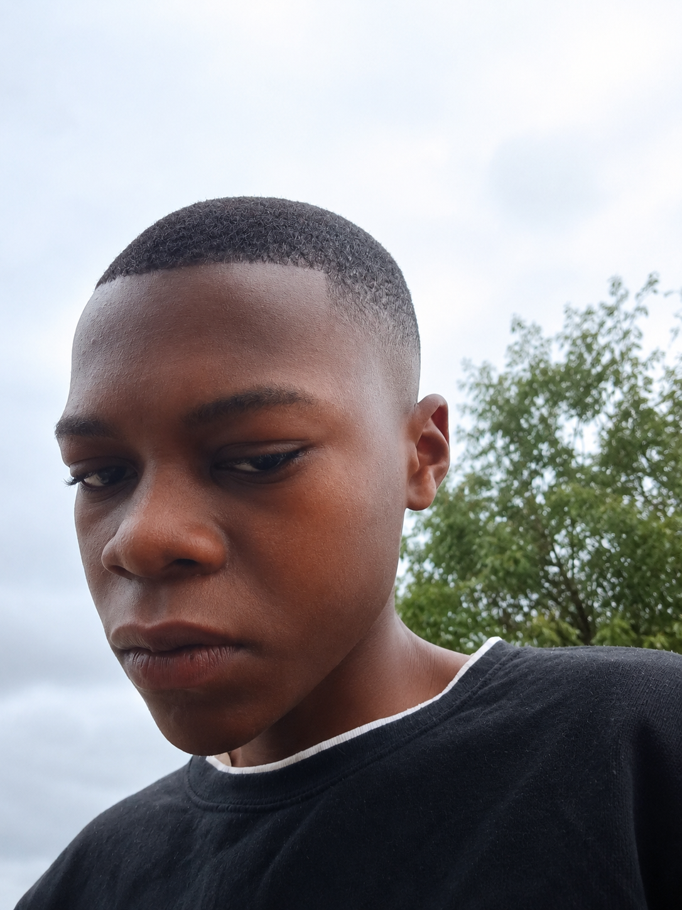

NOVA
An ambitious AI and education platform concept combining science learning, programming, questions, examinations, career guidance and AI assistance.

Ndou Paul is a young developer and creator from Beitbridge, Zimbabwe. He is interested in technology, programming, artificial intelligence, education and creating new digital ideas.
Paul is a good person who enjoys learning, creating, solving problems and exploring new ideas. He is developing his skills in technology while working toward creating useful digital experiences for people.
This website is the official personal website of Ndou Paul.
For more information about Ndou Paul, visit: https://ndoupaul438-debug.github.io/Paul-/
PAUL NDOU · OFFICIAL WEBSITE
I'm Paul Ndou, a young developer and creator interested in artificial intelligence, programming, education technology, mobile apps, communication and games.
01 · ABOUT ME
I'm Paul Ndou, a 15-year-old developer and creator from Beitbridge, Zimbabwe.
I'm a good person who enjoys learning, creating and exploring new ideas. I'm especially interested in technology, programming, artificial intelligence, mobile applications, education technology and game development.
I believe that being young should not stop me from learning and building. I enjoy turning ideas into projects, solving problems and improving my skills through practice.
My goal is to continue learning, create useful technology and build projects that can make a positive difference.
02 · PROJECTS
An ambitious AI and education platform concept combining science learning, programming, questions, examinations, career guidance and AI assistance.
A communication application concept exploring messaging, groups, calls, media sharing and an integrated AI assistant.
An Android AI assistant concept focused on intelligent interaction and useful device features.
A football game project exploring teams, players, competitions, career mode and mobile gameplay.
Projects focused on helping learners access educational resources, practise questions and develop their skills.
New ideas, experiments and digital products will be added as they become ready.
03 · FOCUS
04 · CONTACT
Follow my development journey and explore my projects.